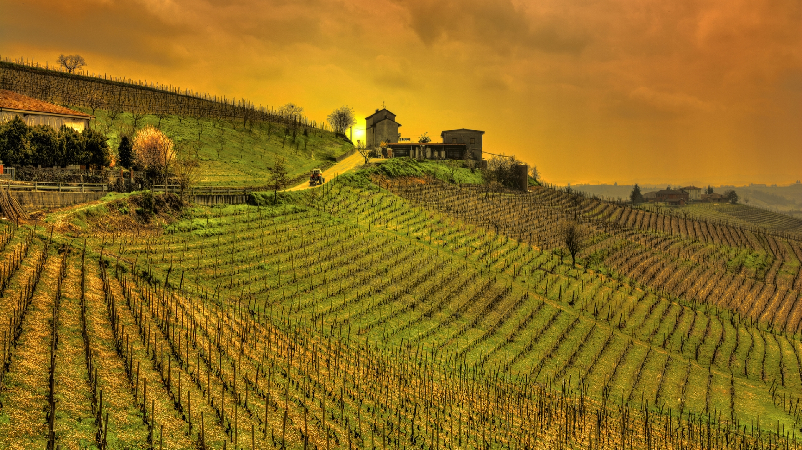

Mendoza
Bodegas El Paraiso se encuentra en Mendoza, una provincia argentina que es sinónimo de vino. La tierra en esta región es franco arenosa, y el clima seco, con días muy calurosos y noches muy frescas. La presencia de más de 900 bodegas y 145 mil hectáreas de viñedos explican por qué esta zona es el área vitivinícola más importante del país. Sin embargo, esta tierra todavía tiene mucho por decir. Así lo cree Bodegas El Paraiso, y obra en consecuencia, difundiendo a nivel internacional el surgimiento de bodegas de primera línea en la Argentina. Una nueva visión de la calidad -con plantaciones de varietales clásicos, preservación de vides antiguas, re aplicación de técnicas artesanales europeas y la utilización de tecnología de avanzada- da como resultado vinos de nivel internacional

Historia
En 1887 nació en Italia Don Julio Agüero, dando inicio a la historia y la tradición de Bodegas El Paraiso. Con solo 23 años, en 1910 su joven audacia lo impulsó a dejar atrás la pequeña localidad de Fasano y emprender viaje a la Argentina, más precisamente a Lujan de Cuyo, en la provincia de Mendoza. Hombre culto, maestro de profesión, y un sólido espíritu emprendedor, Don Julio comenzó a idear su proyecto de vida en estas latitudes.
En 1930, luego de años de esfuerzo, logro concretar unos de sus mas grandes sueños, tener um viñedo propio e inagurar su Bodega a la que llamo El Paraiso, porque segun don Julio: "La bodega era su unico paraiso"
Actualidad
Hoy, transcurridos más de 85 años, la Familia Agüero mantiene intactos los valores y el legado histórico de la familia, representados en una línea de vinos únicos donde resaltan las mejores particularidades de los distintos viñedos que la familia posee en Lujan de Cuyo y Valle de Uco
En la actualidad Gerardo Agüero visñeto de don Julio, es quien esta a cargo de la empresa junto a su hermana Patricia Agüero.
Nuestro Equipo
Paul Hobbs
Winemaker
Paul Hobbs es un neoyorquino que muy joven cursó enología en California, pero inconformista y curioso como es, su carácter lo llevó a conocer casi todos los secretos de la profesión. Así pudo iniciar su carrera como consultor o flying winemaker, primero en su país natal y luego fuera de fronteras, donde trabajó en distintas bodegas locales, hasta llegar a Bodegas El Paraiso
Jose Gabriel Salinas Castro
Ingeniero Agronomo
Nació en Cochabamba el 1º de marzo de 1980.
Sus estudios primarios los realizó en la escuela fiscal Wilge Rodriguez, los secundarios en el Colegio Nacional Sucre, habiendo sido su abanderado, graduado como Ingeniero Agrónomo en la Universidad Mayor de San Simón, con una Maestría en Suelos y Cultivos Tropicales en el Instituto Interamericano de Cooperación Agrícola (IICA, Turrialba, Costa Rica) y un Doctorado en Manejo de Suelos en la Universidad Estatal de Carolina del Norte (Raleigh, EE.UU.)